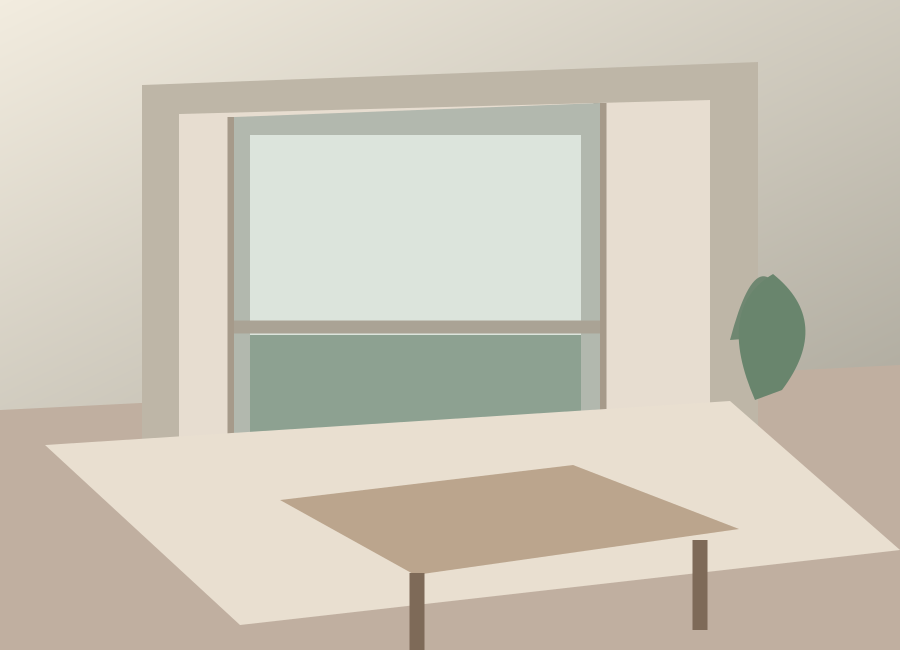
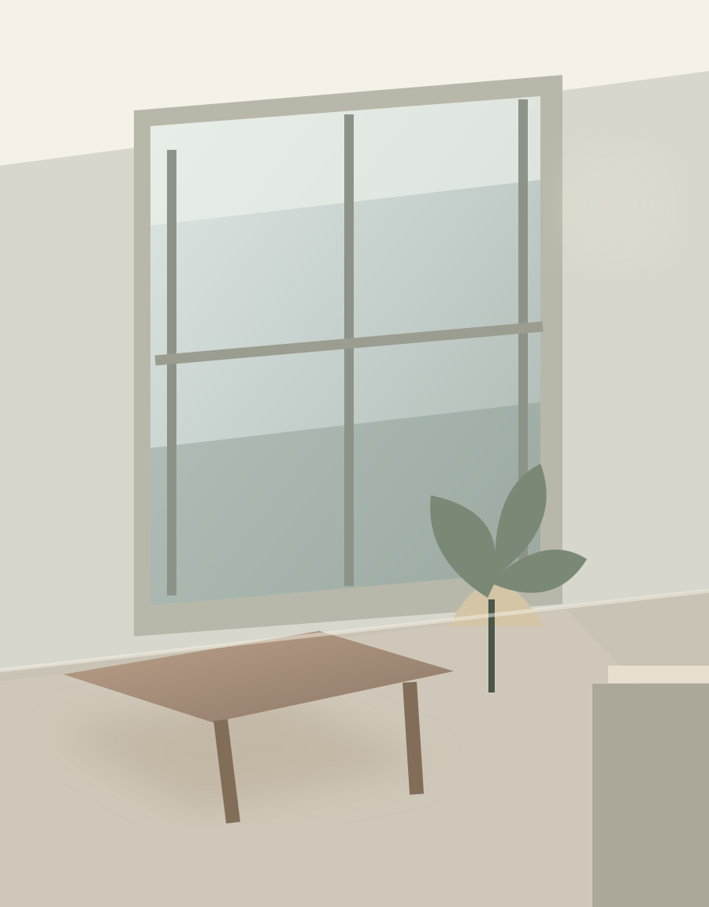
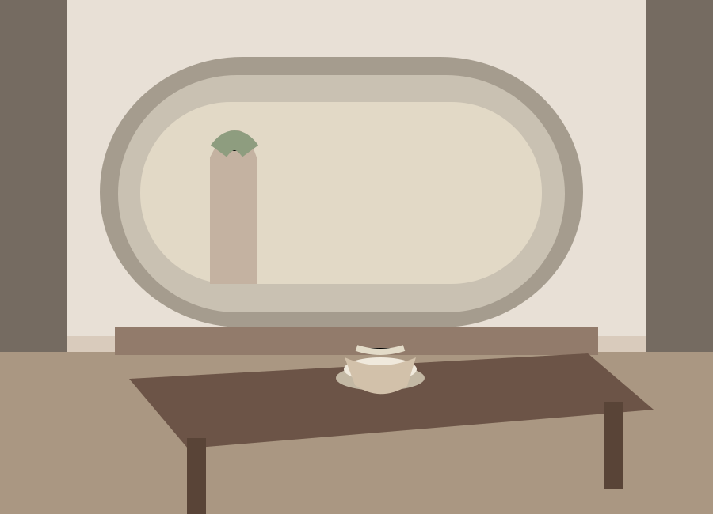
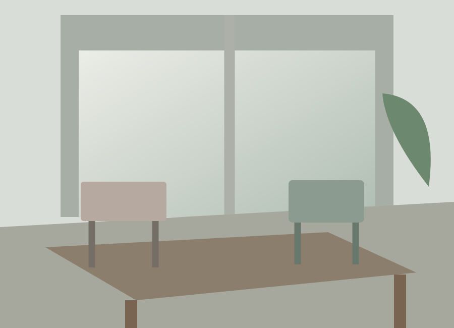

↗光庭の家
家族の気配が、光とともにめぐる住まい。
TOKYO BASED DESIGN STUDIO EST. 2024 / FICTIONAL
何もない空間に、豊かな時間をつくる。
NOEMAは、暮らしと建築の「あいだ」を設計する、
小さなデザインスタジオです。

OUR PHILOSOPHY
大切にしているのは、目を引くかたちよりも、そこで過ごす人の気持ちです。光の入り方、風の通り道、素材に触れる手ざわり。必要なものを見極め、空間に静かな余白を残すことで、一人ひとりの暮らしに馴染む建築を目指します。
設計についてもっと知る ↗02 / SELECTED WORKS
住宅から小さな店舗まで。
その場所だけの答えを、丁寧に。

↗家族の気配が、光とともにめぐる住まい。

↗街の喧騒から、ほんの少し離れる場所。

↗集まることも、集中することも自然に。
※掲載プロジェクトはポートフォリオ用に制作した架空の実績です。
心地よさは、
目に見えないところにある。
03 / OUR APPROACH
設計を急ぐより、
対話する時間を大切にします。
ふだんの過ごし方、好きな景色、これからの暮らし。言葉にならない想いも、丁寧にひもときます。
現地で光と風を感じながら、空間の可能性を考えます。素材や寸法まで一つひとつ確かめます。
つくって終わりではなく、使われてから良くなる空間へ。引き渡し後の変化にも寄り添います。
04 / ABOUT US
NOEMA STUDIOは東京を拠点とする、架空の建築・インテリアデザイン事務所です。住まい、店舗、オフィスの設計を通じて、人と場所のちょうどいい関係を探ります。
05 / CONTACT
まだ具体的でなくても大丈夫。
あなたの「こんな場所があったら」を聞かせてください。
このサイトは制作実績のためのデモです。問い合わせ先は架空のメールアドレスです。